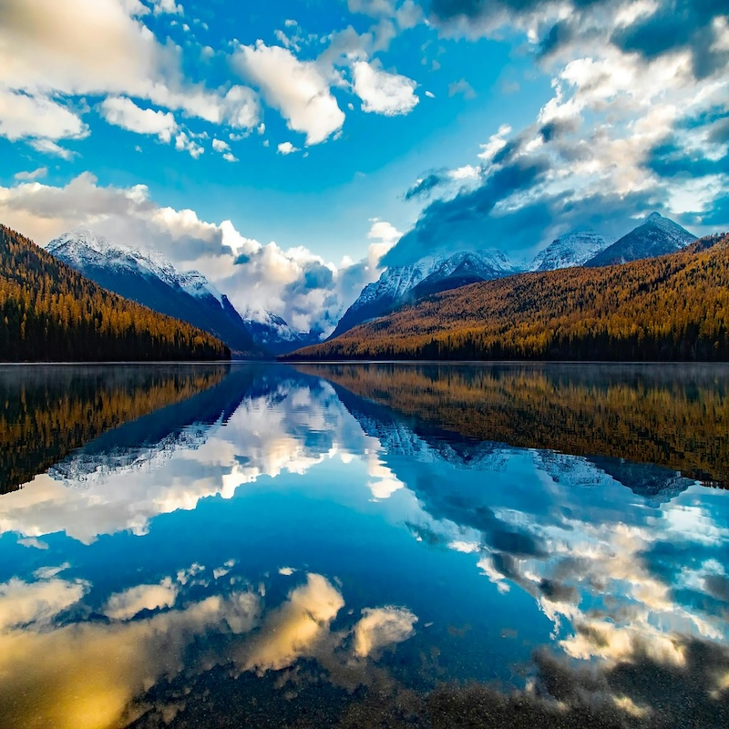

Immerse yourself in the beauty of nature! This platform is designed to help you document your nature and wildlife observations while embracing creativity. Capture moments with photos, write stories, and share your experiences with a community of nature lovers. For more information on wildlife conservation, visit: Montana Fish, Wildlife & Parks .
Every hike, every birdwatching session, and every quiet moment in nature brings new discoveries. From the majestic elk to the delicate butterflies, let's capture the wonder of the world around us. Whether you're an experienced naturalist or just starting, this journal will help you connect with wildlife on a deeper level.
Don't forget to add a creative twist with art or storytelling!
Don't forget to bring your GPS to track your hikes and wildlife observations.
Once you've recorded something, be sure to share it: Sharing your observations
"Nature always wears the colors of the spirit." - Ralph Waldo Emerson